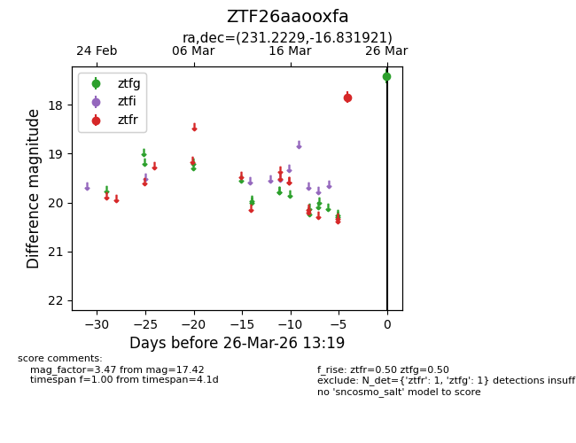
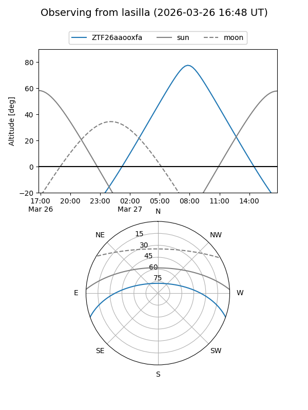
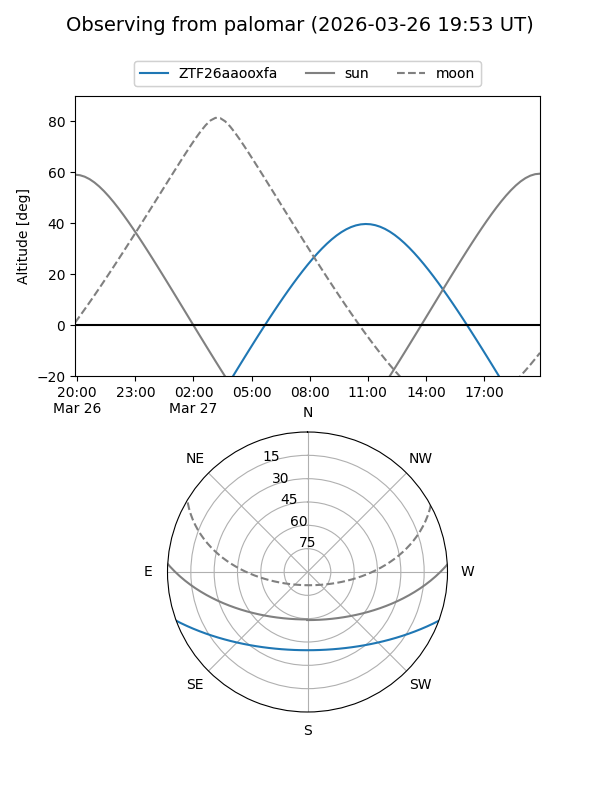

ZTF26aaooxfa
Target ZTF26aaooxfa at 2026-03-26 13:21
Aliases and brokers:
FINK: link
Lasair: link
ALeRCE: link
alt names
ZTF26aaooxfa (ztf,fink_ztf)
Coordinates:
equatorial (ra, dec) = 231.2229,-16.83192
equatorial (HMS+DMS) = 15:24:53.50,-16:49:54.92
galactic (l, b) = (347.6504,+32.40478)
Flags:
Photometry:
last ztfg=17.42, ztfr=17.84
1 ztfg, 1 ztfr detections
Lightcurve

Visibility


Additional plots